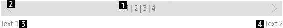

Step Indicator
Definition
Usage
Interaction
Specs
C_STEPINDICATOR
Definition
Step Indicator shows the current step in a screen which allows users to configure settings in a set of predefined steps.
Usage
- It is used on screen which has progress steps.
- Indicator status is able to be described :
. Indicator status
1. Previous step : enabled with complete mark (v)
2. Current step : highlighted
3. Next step : neutral
. ‘Complete mark’ includes 2 options
1. Completed : Step icon with checked mark (v)
2. Skipped : Dimmed step icon
Interaction
Specs
Properties
Step Indicator consists of the following elements:
1. Step label (
Mandatory
)
- display all steps
- It has 4 status
. Previous step which is completed
. Previous step which is skipped by user
. Current step
. Next step
2. Indicator icon (
Optional
)
- has 3 options
. Previous indicator : use if user can go to the previous page by pressing [LEFT] key
. Next indicator : use if user can go to the next page by pressing [RIGHT] key
. Skip indicator : use if user can skip the current step by pressing [RIGHT] key
- Display Next indicator or Skip indicator
- NOT display the indicator if moving between pages is NOT available
3. Text 1 (
Optional
)
4. Text 2 (
Optional
)

Property Table
C_STEPINDICATOR
PROPERTY
USE
VALUE
Step label
◎
<<total number of steps>>
Indicator icon
◎
Text 1
<<value>>
Text 2
<<value>>
Visual
GUI
C_STEPINDICATOR_WHITE
Motion
C_STEPINDICATOR
LINK :
C_SLIDERBASIC
Download PNG Resources
*Tags :
Pagination